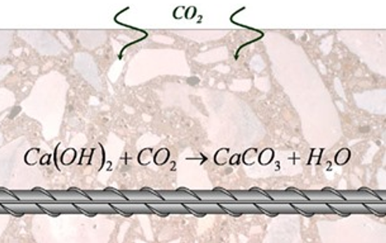

This paper is about blah blah...
Concrete is one of the most essential materials in most construction applications, concrete is typically formed from cement, sand and gravel and water. It has its best uses in foundations; pathways and roadways; bridge and tunnel work; and many more. However, both at a commercial and domestic scale there is a massive issue with modern concrete: deterioration. This issue is estimated to have a cost of $100 billion per annum worldwide (Chen, 2004), to highlight the problem, about half of schools built in the UK only about 50 years ago need permanent repair work or outright replacement of whole structures (Department for Education, 2021). This conference project will discuss why concrete has this problem, alternatives to modern concrete, past and new, and whether these alternatives are feasible.
Damage to concrete is often the result of many factors in conjunction over time, main ones being:
If water enters small cracks in then freezes, the crack gets bigger. This is because water expands ~9% when it freezes. This, in turns, lets more water in when it defrosts and when it freezes over again the crack gets bigger, letting more water in and so on…
Essentially carbon dioxide in the air reacts with hydrated calcium hydroxide, (Bary, 2002), a compound in concrete. This leads to the formation of calcium carbonate, which lowers pH of the structure which in reinforced concrete- concrete with reinforcing steel aka. Rebar- destroys the oxide layer around the rebar, further destroying the structure. Figure 1 shows the chemical reaction.
Acidic: The combustion of fossil fuels lead to sulphurous gases that combine with moisture in the atmosphere, lowering its pH, making it into acidic rain. If concrete is exposed to acidic conditions for a long time, it will wear away.
Salts and Alkalis: Salts in many forms such as de-icing salts; sodium, potassium, calcium chloride are mildly acidic, wearing away concrete when in solution especially. Alkalis attack concrete via alkali-silica reactions. This can happen over time as highly alkaline cement paste reacts with the silica in sand or gravel inside concrete, producing a characteristic pattern of deterioration in concrete, as seen in figure 2.
In the previous section it was discussed that normal concrete can deteriorate through freeze-thaw cycles (that are dependant on cracks being present) or chemical weathering (that create cracks themselves and weather concrete and its reinforcements gradually). These failures of concrete can be minimised with the implementation of both old and new technologies.
Starting with the old, why are ancient roman structures still intact to this day? Its because their concrete auto-regenerated itself! Roman cement was made from sea water and volcanic ash (Marie D. Jackson, 2013), as moisture entered cracks remaining volcanic ash would dissolve into it and crystalise, filling up the crack, effectively healing itself. However roman concrete lacks compressive strength that modern concrete has and would most likely fail in most modern applications (Dove, 2021). This is where a similar, however newer, technology can come into play.
Geopolymer concrete is essentially normal concrete but with fly ash and GGBS, byproducts of thermal power and steel plants (Mishra, 2021). It has the same property as roman concrete, being that it can heal itself, however it has a much higher compressive strength than even that of normal concrete – 28MPa (bigdreadymix, 2023) < 45Mpa (Mohd A., 2013).
Another alternative to basic concrete is bacteria concrete. Essentially bacteria and nutrients are added to concrete, the bacteria lay dormant until exposed to moisture, this would happen when a crack forms. When the bacteria are activated, they start to multiply and will fill up the crack, preventing more damage via the methods described in the previous section.
Often the ability to adapt to new technologies comes down to the price. Table 1 shows the cost of ingredients to create concrete (CC) and geopolymer concrete (GPC).Its clear that GPC is more expensive, more than 3x more in fact. However, because this technology is not widely adopted yet the price of MK-K (metakaolin) is quite high, and so takes the biggest proportion of its price, apart from coarse aggregate. In addition to a future uncertainty about up front cost, the main draw for GPC was its self-healing abilities, thus meaning the future cost of upkeep/ replacing will be much lower than normal CC. Future research should explore this further to see if GPC could even be more cost effective in the long run.
| Ingredients | Cost(US$/t) | GPC-30 | CC-30 | ||
| Quantity (kg) | Quantity (kg) | Cost (US$) | Quantity (kg) | Cost (US$) | |
| MK-K | 50 | 577 | 28.9 | 0 | 0 |
| Cement | 50 | 325 | 16.3 | ||
| Fine aggregate | 3 | 538.5 | 1.6 | 725 | 2.2 |
| Coarse aggregate | 7.5 | 807.8 | 6.1 | 1200 | 9 |
| SS | 75 | 211.2 | 15.8 | 0 | 0 |
| SH | 1000 | 34.6 | 34.6 | 0 | 0 |
| Total Cost | 87 | 27.5 |
As for bacteria concrete, the technology is still in its early stages. There has not been any large-scale implementation of the technology, only tests. In addition, bacteria concrete’s performance could depend a lot on its environment, of course bacteria will struggle in extreme temperature conditions. However, if this technology can be developed to a suitable standard, it would be much cheaper than GPC, only being around 10-30% more expensive than normal CC (Checkatrade, 2023).
To conclude, ordinary concrete has not got the longevity to be a sustainable material in the future. Many factors cause damage over time, and costs billions globally to upkeep. The adaptations to concrete discussed in this paper were geopolymer concrete and bacterial concrete. Geopolymer concrete uses similar mechanisms to repair itself as roman concrete, that has stood the test of time as they are still up to this day, however, is expensive. Bacterial concrete is cheaper but has not been tested enough. Will these technologies come into significance to the future? We will have to see.